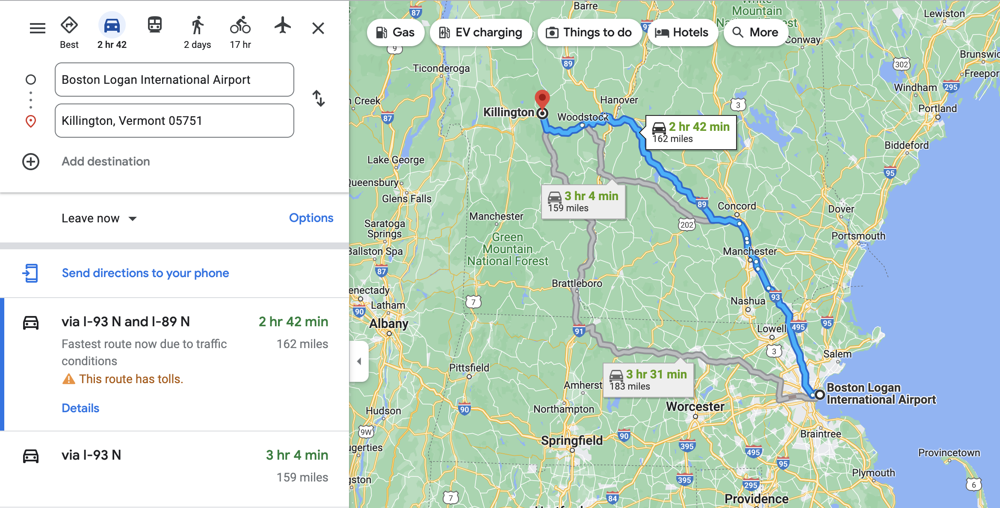

Vermont (/vər'mɒnt/ i)[6] is a landlocked New England state in the Northeastern United States. It is bordered by the states of Massachusetts to the south, New Hampshire to the east, New York to the west, and the Canadian province of Quebec to the north. As of the 2020 U.S. census, the state had a population of 643,503,[7] ranking it the second least populated U.S. state. It is the nation's sixth smallest state in area. The state's capital of Montpelier is the least populous U.S. state capital. No other U.S. state has a most populous city with fewer residents than Burlington.
- Day 1 Boston Logan Airport - Killington
